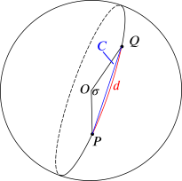
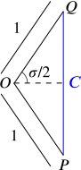
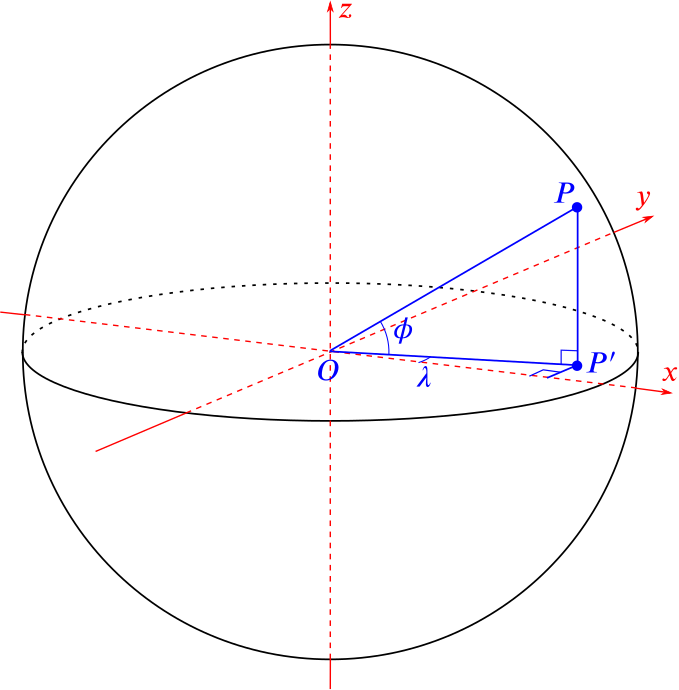
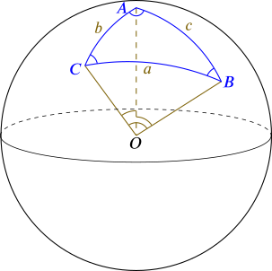
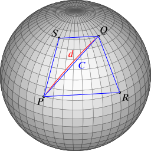

Recall that in this formula, we are finding the great circle distance d between two points P and Q which have latitudes ϕ1 and ϕ2 and longitudes λ1 and λ2 respectively. The radius of the Earth (or sphere) is R, and the haversine is defined by
haversinx=sin2(x2).
(On the left hand side of the first equation, dR is thought of as an angle in radians.)
So we can rewrite the haversine formula in more familiar notation as
sin2(d2R)=sin2(ϕ2−ϕ12)+cosϕ1cosϕ2sin2(λ2−λ12).
In this piece, we explore where this formula comes from, and why navigators might have used the unfamiliar haversine rather than ordinary sines and cosines in their calculations.
Preliminaries
We can use any units of distance that we wish when we do our calculations: changing units does not affect the value of dR (as long as we use the same units for both d and R). Most conveniently, we can choose units so that the radius of the earth is R=1, meaning that we are working with a unit sphere. Then the haversine formula becomes
which looks a little simpler. We will work with these forms throughout.
The great circle distance, d, is the shorter arc joining two points on a great circle. We can also consider the chord (straight line) joining the two points, and we let its length be C.

We can immediately observe some relationships between d, C and the angle σ (measured in radians) that the great circle arc makes with the centre of the sphere: we have d=σ (as the radius is 1), and by drawing the isosceles triangle POQ, we see that C=2sin(σ2):

Putting these together by eliminating σ,
C2=sin(d2).
If we square this and multiply by 4, we get an alternative expression:
C2=4sin2(d2)=4haversind.(3)
We now offer four approaches to deducing the haversine formula. The first two of these use coordinates, so we begin with this.
Coordinates
Given a point on the unit sphere with latitude ϕ and longitude λ, we can calculate the corresponding Cartesian coordinates, as shown in the following diagram.

What are the Cartesian coordinates of P (that is, its (x,y,z) coordinates)?
Once we know the Cartesian coordinates of the points P and Q with latitudes ϕ1 and ϕ2 and longitudes λ1 and λ2 respectively, we can calculate the differences in the x, y and z coordinates of the two points and use those to calculate appropriate distances or angles in order to find d.
However, the expressions are going to become quite cumbersome with so many variables, so we look for a way to simplify things before going further.
One trick is to notice that the distances and angle σ all remain unchanged if we rotate the sphere about the north-south axis. This only changes the longitudes of the points, so we could rotate it until P has longitude 0 and Q has longitude λ2−λ1, which we will call Δλ (the difference between the λs).
We could perhaps try rotating further so that P lies at the north pole, say, but it is not clear what would happen to Q if we did that, so we will stop rotating at this point.
Approach 1: Pythagoras and trigonometry
What is the distance between P and Q?
Using Pythagoras’s theorem, the square of the distance is given by
(We have used the identity sin2x+cos2x=1 a few times here.)
Since the distance between them is actually C, we have
C2=2−2cosϕ1cosϕ2cos(Δλ)−2sinϕ1sinϕ2.
We can take the square root of this to find C if we wish to.
Recalling from above that C2=sin(d2), can you use this to obtain an expression for sin2(d2) as it appears in the haversine formula (equation (2) above)?
We have to divide our previous expression by 4=22 to get
Since we know the coordinates of P and Q, we also know the vectors p=OP−→− and q=OQ−→−. They each have unit length, so the angle between them, σ, is given by cosσ=p⋅q.
Can you use this to find an expression for sin2(d2)?
Recalling that P=(cosϕ1,0,sinϕ1) and Q=(cosϕ2cos(Δλ),cosϕ2sin(Δλ),sinϕ2), we have
cosσ=p⋅q=cosϕ1cosϕ2cos(Δλ)+0+sinϕ1sinϕ2.
Now σ=d, so we can use the formula sin2x2=12(1−cosx) to write down
sin2(d2)=12(1−cosϕ1cosϕ2cos(Δλ)−sinϕ1sinϕ2).
We can then continue exactly as in Approach 1.
Approach 3: Spherical trigonometry
Just as there are sine and cosine rules for triangles in the plane, there are similar rules for triangles on a sphere.
Here is a drawing of a spherical triangle:

The angles A, B and C are the angles at the vertices A, B and C of the triangle, while a, b and c are the side lengths as usual. But if we take the sphere to have radius 1, then they can also be thought of as angles: a is the angle ∠BOC, for example. We therefore assume the sphere to have radius 1 from now on.
There are two spherical cosine rules and one spherical sine rule, which are:
spherical cosine rule (1):
cosa=cosbcosc+sinbsinccosA
(and similar equations with a, b, c and A, B, C permuted)
spherical cosine rule (2):
cosA=−cosBcosC+sinBsinCcosa
(and similar equations with a, b, c and A, B, C permuted)
spherical sine rule:
sinAsina=sinBsinb=sinCsinc
Can you use this information to find an expression for cosσ and then sin2(d2) in our case?
If we take A to be the north pole, B to be our point P and C to be our point Q, then a=σ, b=π2−ϕ2 (sometimes called the colatitude of Q – can you see why?), c=π2−ϕ1 and A=Δλ.
This gives another way of seeing why only the difference between the longitudes is important.
So we know b, c and A, and we want to find a, meaning that we can use the first spherical cosine rule. This immediately gives
As in Approach 2, we have σ=d, so we can use the formula sin2x2=12(1−cosx) to write down
sin2(d2)=12(1−cosϕ1cosϕ2cos(Δλ)−sinϕ1sinϕ2).
Again, we can then continue exactly as in Approach 1.
Approach 4: Using haversines directly
The above approaches have all proven the haversine formula via the familiar sine and cosine functions. In this approach, we will use equation (3) above for the length of a chord in terms of the haversine function:
C2=4haversind,
where d is the great circle distance (or angle subtended) and C is the corresponding chord length.
We wish to find the great-circle distance d between the points P and Q with latitudes ϕ1 and ϕ2 and longitudes λ1 and λ2 respectively.
By thinking about symmetry, we are prompted to also consider the points R and S with latitudes ϕ1 and ϕ2 but with swapped longitudes λ2 and λ1 respectively. This gives us the following configuration:

In this diagram, the blue lines are all straight chords (though an optical illusion makes it look otherwise), and the red line is the great circle between P and Q.
Can you use this diagram to deduce the haversine formula?
The first thing to observe is that the lines PR and SQ are parallel. This is because the circles at latitudes ϕ1 and ϕ2 are just scaled versions of each other. This means that the quadrilateral PRQS is actually planar and a trapezium. Furthermore, the lengths PS and RQ are the same by construction. The trapezium is therefore an isosceles trapezium. We can redraw it like this:
We can work out the length e directly, as the great circle between P and S is the line of longitude, so
e2=4haversin(ϕ2−ϕ1).
(It might be that the angle between P and S is actually ϕ1−ϕ2, but as haversin(−x)=haversinx, it makes no difference.)
If P and R were on the equator, we would have PR2=4haversin(λ2−λ1) in the same way. But the circle of latitude ϕ1 has radius cosϕ1, so scaling by a factor of cosϕ1 gives us
Surely we could just use cos(dR)=cosϕ1cosϕ2cos(Δλ)+sinϕ1sinϕ2 to calculate great circle distances, as we found in Approaches 2 and 3? Why would anyone need the haversine? (We have reinserted the radius R here, as practical calculations will use standard units of measurement. Also, a reason is given in Lost but lovely: the haversine for introducing the haversine, but that was just to simplify the formula involving three occurrences of sin2x2.)
Navigators in the past would have had to make do with tables and slide rules: there were no calculators. So what would happen if we try to work out the distance between Dover and Calais, say, using the two different formulae, but restricting ourselves to the limited calculating tools of the past?
Here is some relevant information:
Dover: latitude 51.15∘N, longitude 1.33∘E
Calais: latitude 50.97∘N, longitude 1.85∘E
Radius of the Earth: 6378km
And trigonometric values, accurate to 4 significant figures or 4 decimal places:
Using these values, calculate the great circle distance from Calais to Dover using the two different formulae (and you can use a calculator for the multiplications, and for working out the final inverse cosine and haversine). To truly emulate the past, round all of your intermediate calculations to 4 significant figures as well.
Using the formula
cos(dR)=cosϕ1cosϕ2cos(Δλ)+sinϕ1sinϕ2
we can calculate as follows (working to 4 significant figures):
This is quite unfortunate: we have lost too much information because cos(Δλ) is so close to 1. In fact, it is 0.9999588 to 7 decimal places, but even that increased accuracy would be of no help if we continue to work to 4 decimal places further on. Tables were not available with that level of accuracy, so this formula is useless for calculating short distances.
And this agrees to 4 significant figures with the value calculated on a calculator, because we have not lost any significant accuracy when working with the haversine of small angles.
The actual great circle distance between Dover and Calais is this, plus or minus a couple of kilometers, as the latitude and longitude are only accurate to 0.01∘; they would need to be more precise to give a more accurate answer.
The reason the simple formula fails for small distances is that if Δλ is small, then cos(Δλ) is almost exactly 1. Then the formula becomes
cos(dR)≈cosϕ1cosϕ2+sinϕ1sinϕ2=cos(ϕ2−ϕ1).
If the difference in latitudes, ϕ2−ϕ1, is also small, then this gives cos(dR)≈1, and so dR≈0.
What the haversine formula does instead is to work in terms of the sines of the differences between the latitudes and longitudes. If Δλ is small, then sin(Δλ)≈Δλ (as long as we are working in radians), so working to 4 significant figures will still be very accurate.